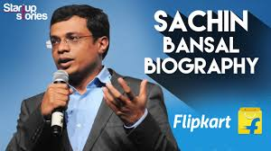

FLIPKART
Flipkart Private Limited is an Indian e-commerce company, headquartered in Bengaluru, and incorporated in Singapore as a private limited company. The company initially focused on online book sales before expanding into other product categories such as consumer electronics, fashion, home essentials, groceries, and lifestyle products.
The service competes primarily with Amazon India and domestic rival Snapdeal.[5][6] As of March 2017, Flipkart held a 39.5% market share in the Indian e-commerce industry.[7] Flipkart has a dominant position in the apparel segment, bolstered by its acquisition of Myntra, and was described as being "neck and neck" with Amazon in the sale of electronics and mobile phones.

Start-up Phase
Flipkart was founded in October 2007 in Mumbai by Sachin Bansal and Binny Bansal, alumni of the IIT, Delhi and former Amazon employees.[9][10][11] The company initially focused on online book sales with country-wide shipping. Flipkart slowly grew in prominence and was receiving 100 orders per day by 2008.[12]
Growth, Mergers and Acquisitions
In 2010, Flipkart acquired the Bangalore-based social book discovery service WeRead from Lulu.com.[13]
In 2011, Flipkart acquired the digital distribution business Mime360.com[14] and the digital content library of the Bollywood portal Chakpak.[15] Following the acquisition, Flipkart launched their DRM-free online music store Flyte in 2012. Due to competition from free streaming sites, Flyte was unsuccessful and shut down in June 2013.[16][17][18][19]
With its eyes on India's retail market, Flipkart acquired Letsbuy, an online electronics retailer,[20] in 2012, and Myntra, an online fashion retailer, for US$280 million in May 2014.[21] Myntra continues to operate alongside Flipkart as a standalone subsidiary focusing on separate market segments.[22]
In April 2015, Flipkart acquired Appiterate, a Delhi-based mobile marketing automation firm. Flipkart stated that it would use Appiterate's technology to enhance its mobile services.[23] In December 2015, Flipkart purchased a minority stake in the digital mapping provider MapmyIndia[24] and the UPI mobile payments startup PhonePe.[25][26] In 2022, when PhonePe moved its entire base to India, Flipkart separated the ownership of PhonePe and shareholders in India and Singapore and the respective shareholders purchased shares of PhonePe's India entity directly. It was announced that a cash payout of approximately $700 Mn was to the former and current employees who were holding PhonePe's shares.[27][28]
In 2016, Flipkart acquired the online fashion retailer Jabong.com from Rocket Internet for US$70 million and
In January 2017, Flipkart made a US$2 million investment in TinyStep, a parenting information startup.[29]
In April 2017, eBay announced that it would sell its Indian subsidiary, eBay.in, to Flipkart and invest US$500 million in the company. While eBay suggested that the partnership would allow Flipkart to access eBay's network of international vendors, these plans never came to fruition.[30][31] In July 2017, Flipkart made an offer to acquire its main domestic competitor, Snapdeal, for US$700 to 800 million. It was rejected by Snapdeal, which was seeking at least US$1 billion.[32]
History of Flipkart
In August 2018, American retail chain Walmart acquired a 77% controlling stake in Flipkart for US$16 billion, valuing Flipkart at around US$20 billion.[33] Flipkart is valued at $37.6 billion as of 2022.[34] It is planning to go public through a listing in the United States of America in 2023.[35]
Flipkart invested US$4 million in the customer engagement and rewards platform EasyRewardz on 19 November 2019.[36][37]
In 2020, Flipkart Wholesale launched a digital platform for kiranas and MSMEs.[38] In July 2020, Flipkart acquired a 27% stake in Arvind Fashions Limited's newly formed subsidiary Arvind Youth Brands for US$35 million. Arvind Youth Brands owns the Flying Machine brand.[39] Flipkart also announced it will roll out Flipkart Quick, a hyperlocal 90-minute delivery service for product categories such as groceries, home accessories, mobile phones, stationery, and more.[40]
In October 2020, Flipkart acquired a 7.8% stake in Aditya Birla Fashion and Retail for US$204 million.[41][42] The following month, Flipkart acquired the intellectual property of gaming startup Mech Mocha for an undisclosed amount.[43] The acquisition formed part of Flipkart's plans to gain and retain users by offering casual games.[44] In November 2020, Flipkart acquired augmented reality company Scapic, which provides a suite of tools to create and publish augmented reality, virtual reality, and 3D content quickly and without coding.[45]
Gujarati language was also added to their platform in 2021 which resulted in Flipkart being available in 8 local Indian languages that were Gujarati, Bengali, Odia, Hindi, Telugu, Kannada, Marathi and Tamil.[46]
In April 2021, Flipkart announced the acquisition of travel booking portal Cleartrip.[47]Flipkart also entered the hotel industry for Indian and global market. The Flipkart Hotels uses Cleartrip API.[48] Flipkart acquired the Cleartrip's business in middle east by signing an agreement with Wego - an online market place for travel that operates in middle east and North Africa. This included sale of website Flyin.com.[49]
In April 2022, Flipkart launched its first grocery fulfilment centre in Northeast India, based in Guwahati. The centre was reportedly women-run to support the career progression of Flipkart's female employees.[50] The same month, the company established the Flipkart Foundation to support entrepreneurship and skill development within underserved communities in India